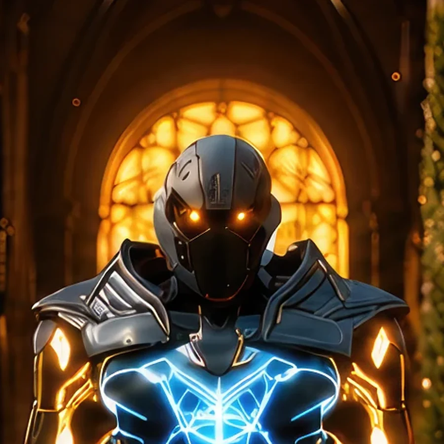
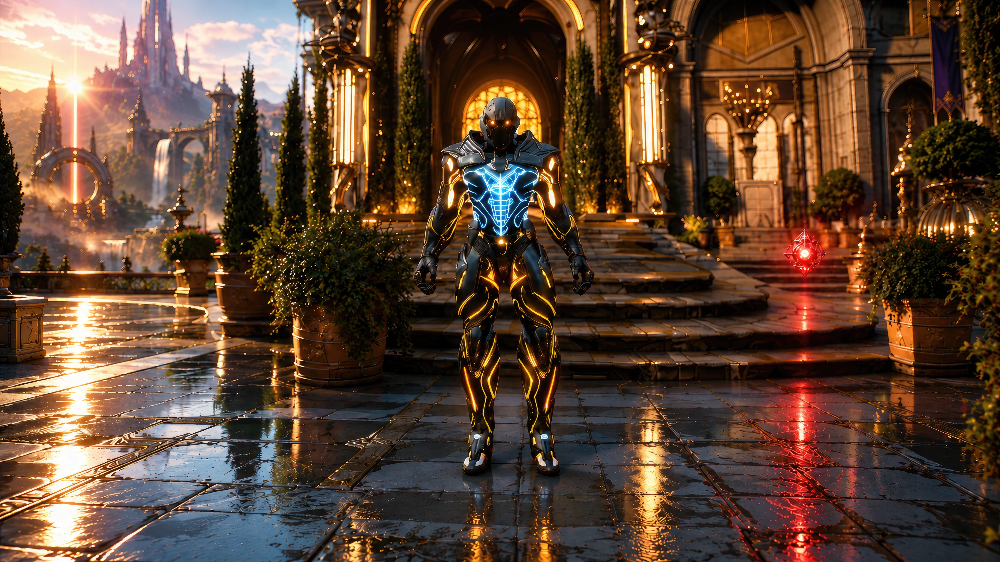
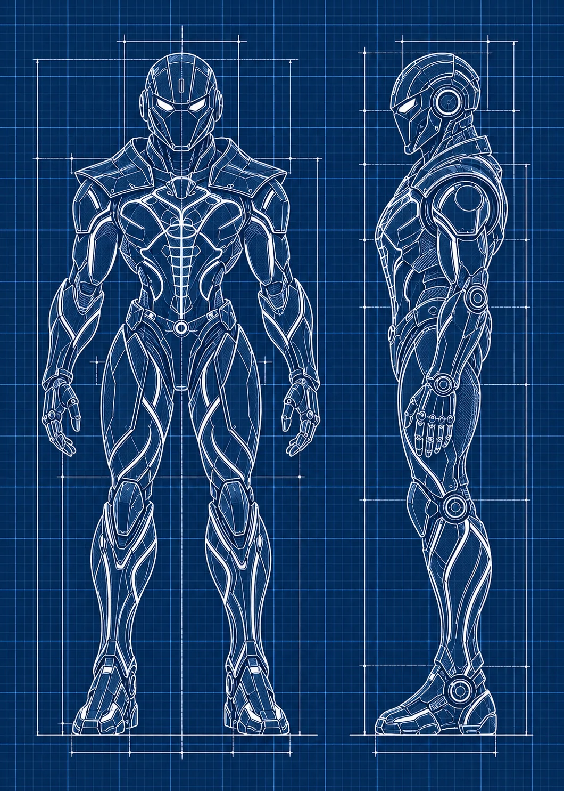

Field Observation
A vivid red orb glows beneath the trees to the hero's right.
 ©
©
GENEZYS ARCHIVE · EARTH 1 · Legionnaire
Velocity Fang
Identity & combat record
Archive node 01 / 05

Archive record
Yvinor is the fastest knight the Exalted Order has ever trained, and the most restless. The Rush Thrust reaches every enemy before any of them can react, and leaves them weaker afterward. The elders keep reminding Yvinor that the Order is sworn to patience. Yvinor keeps reminding them that someone has to arrive on time.
Combat signature
Accelerates strike beyond perception: Deals 40 damage to all. Hit enemies also lose 10 Cosmara for 2 rounds.
Genezys 03:03 ™&©2026LEGIONS
Recovered visual record
Archive node 02 / 05

Full frame available // rotate device to landscape
Technical archive
Archive node 03 / 05

Classified field intelligence
Archive node 04 / 05
FIELD REPORT // ARTIFACT SIGHTING
Field Observation
A vivid red orb glows beneath the trees to the hero's right.
Environment
Object Analysis
Key Findings
Motion archive
Archive node 05 / 05
Motion record not yet recovered